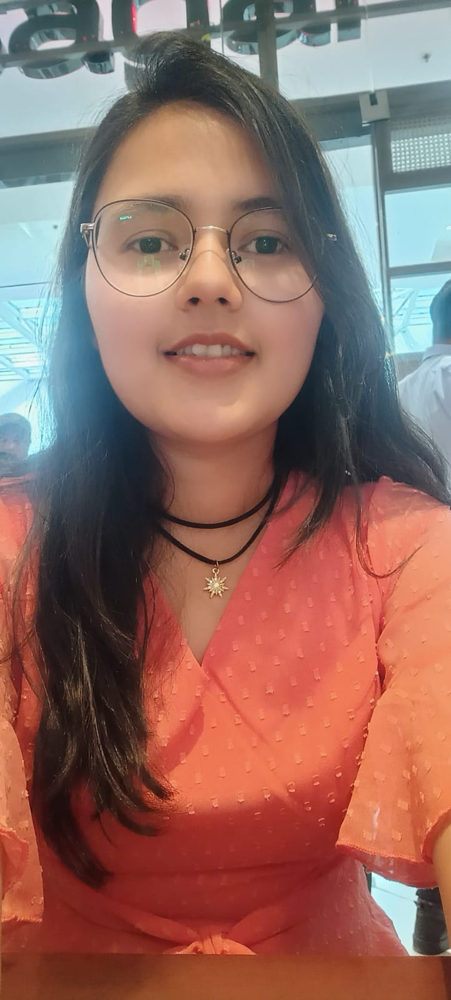

Vandana Kumari

Me in few words
I'm a devoted tech enthusiast, seamlessly navigating the digital realm. Yet, my heart
finds solace in the embrace of nature's wonders, where my profound
connection with the world flourishes.
Education
Pursuing Bachelor Of Technology in ECE from NITH.
Tech Skills
- Data Structures And Algorithms
- C++ Programming languages
- OOPs Concepts
- Web Development
Projects Undertaken
Credit Card Analysis
Technologies used:
- Python language
- Pandas
- Numpy
- Matplotlib
- Scikit-leaarn
Todolist Application
Technologies used:
- HTML
- CSS
- Javascript
- Node.js
- Express.js
Certifications
Leisure activities
During my free time, I engage in a variety of activities that reflect my
diverse interests and passions. One of my favorite pastimes is playing table tennis, which not only keeps me physically active but also sharpens my focus and strategic thinking. I also find
solace in painting, as it allows me to express my creativity and emotions on canvas. Reading books is another cherished activity that broadens my perspective and nurtures my love for learning.
Beyond indoor pursuits, I have an insatiable wanderlust that drives me to explore new destinations and cultures. Traveling not only satiates this thirst for adventure but also provides
invaluable experiences that enrich my understanding of the world. My penchant for trekking allows me to truly immerse myself in the beauty of nature, whether it's amidst the mountains, forests,
or serene landscapes. These activities not only invigorate my spirit but also remind me of the boundless wonders our world holds.
{kind=link}